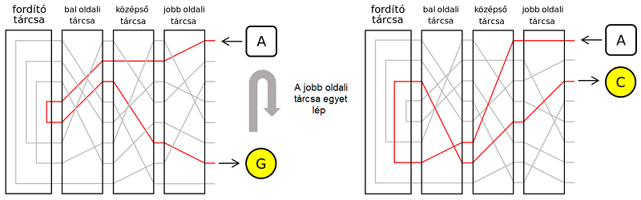

Az Enigma üzenetek sifrírozására (titkosítására, kriptográfiai kódolására, rejtjelezésére) és desifrírozására (visszafejtésére) használt német gyártmányú, forgótárcsás, elektromechanikus berendezés.
Az Enigma Az Enigma nem egyetlenegy berendezés volt, hanem számos modellből álló termékcsalád. Az első Enigma gépeket kereskedelmi célokra készítették az 1920-as évek elején. Az 1920-as évek közepétől a német haderő különféle fegyvernemei is használni kezdték, és a biztonság növelésére több változtatást is végrehajtottak. Más országok is használták vagy az Enigmát, vagy az Enigma alapján tervezett saját titkosító gépüket.
1918. február 23-án Arthur Scherbius német mérnök egy forgótárcsás titkosító gépre jegyzett be szabadalmat, és E. Richard Ritterrel együtt megalapította a Scherbius & Ritter céget. A találmánnyal megkeresték a német haditengerészetet és a külügyminisztériumot, de egyiket sem érdekelte a dolog. A szabadalmi jogokat átruházták a Gewerkschaft Securitasra, amely 1923. július 9-én megalapította a Chiffriermaschinen Aktien-Gesselschaftot (Sifrírozógép Részvénytársaság). Scherbius és Ritter a cég igazgatótanácsába kerültek.
A Chiffriermaschinen AG az Egyetemes Postaegyesület 1923-as és 1924-es kongresszusán is kiállította a tárcsás sifrírozógépét, az Enigma A-t. Ez az írógéppel felszerelt első változat nehéz és ormótlan volt: 65×45×35 centiméter, közel 50 kilogramm. A B modell is hasonlóan nézett ki. Bár mindkettőt Enigmának hívták, az A és a B modell nem sokban hasonlított a későbbiekre: nem csak nagyobbak és nehezebbek voltak, de kriptográfiai szempontból is eltértek, mivel nem volt bennük fordító.
A fordító ötletét Willi Korn, Scherbius egyik kollégája vetette fel, és az 1926-ban megjelent Enigma C-t már fordítóval is felszerelték. A fordító az Enigma gépek egyik kulcsfontosságú alkatrésze.
Az Enigma C az elődjeinek kisebb méretű és könnyebben hordozható változata volt. A súly csökkentése érdekében már nem rendelkezett írógéppel – az operátor az Enigma-művelet utáni betűket kis lámpákból olvasta ki. Az A, B és C modellek az Enigma D 1927-es megjelenésével hamar eltűntek. A D modell átütő kereskedelmi sikert aratott, többek között használták Svédországban, Hollandiában, az Egyesült Királyságban, Japánban, Olaszországban, Spanyolországban, az Egyesült Államokban és Lengyelországban.
A német fegyveres erők közül elsőként a haditengerészet vezette be az Enigmát. A Funkschlüssel C nevet kapott rendszert 1925-ben kezdték el gyártani, és a következő évben rendszeresítették.
1928. július 15-ére a német hadsereg, a Reichswehr hadrendbe állította a saját Enigma-változatát, az Enigma G-t – ezt 1930 júniusában Enigma I-re nevezték át. Emellett az Enigma I-et még Wehrmacht-Enigmaként is ismert volt, a hadseregen kívül számos egyéb katonai és polgári szervezet használta – többek között például a német vasút, a Deutsche Reichsbahn. Az Enigma I és a kereskedelmi Enigma közötti lényeges különbség a kapocstáblában rejlett, mivel a betűcseréléssel lényegesen megnövekedett a gép kriptográfiai ereje. A gép mérete 28×34×15 centiméter volt, tömege 12 kilogramm.
Más országok is bevezették az Enigmát. Az olasz haditengerészet a kereskedelmi Enigmát vette meg, ahogy a spanyol polgárháború alatt a spanyol haditengerészet is. Ezeket a kapocstábla nélküli változatokat feltörték a brit kódfejtők. A svájciak a kereskedelmi Enigma D-hez sokban hasonló K modellt használták katonai és diplomáciai célokra. Ezt a kódot számos ország megfejtette, többek között Lengyelország, Franciaország, Nagy-Britannia és az USA. A japánok számára készült az Enigma T („Tirpitz”), amely a kereskedelmi Enigma K japán használatra módosított változata.
Becslések szerint több mint 100000 Enigma gép készült. A második világháború után a szövetségesek az akkor még biztonságosnak hitt Enigmákat számos fejlődő országnak adták el.
| Modell | Év | Tárcsák | Helyzetek | Fordító | Vágatok |
|---|---|---|---|---|---|
| Enigma I. | 1930 | 3 a 3 (5)-ból | 6 (60) | 1 (3) rögzített | 1 |
| Enigma II. | 1932 | 3 a 3-ból | 6 | 1 rögzített | 1 |
| Enigma A. | 1923 | 4 (8) | 1 | nincs | hajtott |
| Enigma B. | 1924 | 2×4 | 1 | nincs | hajtott |
| Enigma C. | 1926 | 3 | 1 | 1 rögzített | 1 |
| Enigma D. | 1927 | 3 | 1 | 1 cserélhető | 1 |
| Enigma G. | 1936 | 3 a 3-ból | 6 | forgó | 11, 15, 17 |
| Enigma K. | 1938 | 3 a 3-ból | 6 | 1 rögzített | 1 |
| Enigma M. | 1934 | 3 az 5-ből | 60 | 1 rögzített | 1 |
| Enigma M1. | 1934 | 3 a 6-ból | 120 | 1 rögzített | 1 (2) |
| Enigma M2. | 1938 | 3 a 7-ből | 210 | 1 rögzített | 1 (2) |
| Enigma M3. | 1939 | 3 a 8-ból | 336 | 1 rögzített | 1 (2) |
| Enigma M4. | 1942 | 4 a 8+2-ből | 1344 | 2 cserélhető | 1 (2) |
| Enigma M5. | (1945) | 4 a 12-ből | 23760 | 2 rögzített | választható |
| Enigma M10. | (1945) | 4 a 12-ből | 23760 | 2 rögzített | választható |
| Enigma T. | 1942 | 3 a 8-ból | 336 | 1 cserélhető | 5 |
| Enigma Z. | 1931 | 3 a 3-ból | 6 | 1 cserélhető | 1 |
Az Enigma forgótárcsás rejtjelező gép, amely a sifrírozáshoz mechanikus és elektromos elemeket egyaránt használ. A berendezés mechanikus része egy alfanumerikus billentyűzetből, néhány, közös tengelyen forgó tárcsából, valamint egy, a billentyűk leütésével működtetett tárcsaléptető mechanizmusból áll.
Maga a mechanizmus modellről modellre változott: a jobb oldali tárcsa minden egyes leütés után egyet lépett, míg a többi tárcsa adott leütésenként lépett csak egy-egyet. Az egymáshoz képest eltérően elforduló tárcsák hatására az egyes leütésekkel sifrírozott betű mindig más-más lett. Egy billentyű leütésekor az akkumulátorból áram folyt át a kapocstáblán, ahol – a billentyűzet és a tárcsa között – további betűcserét lehetett végrehajtani. A Wehrmacht Enigmájában három, a Kriegsmarine és az Abwehr Enigmájában négy forgótárcsa volt, amelyeken az áram eljutott a tárcsák végén található fordítóhoz. A fordító egy teljesen más úton küldte vissza az áramot újra a tárcsákon, valamint egy esetleges másik kapocstábla átkötésén át a sifrírozott betű lámpájáig. Az állandóan elforduló tárcsák miatt az Enigma polialfabetikus rejtjelet hozott létre: ez lényegesen megnövelte az Enigma-kód biztonságát.

A német katonák az Enigmával – változó beállítással – több különböző hálózaton végeztek rádióforgalmazást. (Ezeket a hálózatokat a kódtörő Bletchley Park kutatói többek között a „Red”, „Chaffinch” és a „Shark” névvel illették.) A forgalmazónak rendelkezésére állt az adott időszakra érvényes Enigma-kód. Az üzenetek megfelelő kódolásához és desifrírozásához mindkét félnek azonos módon kellett az Enigmát beállítania: egyforma tárcsákat kellett ugyanabban a sorrendben és megegyező kezdeti helyzetben használniuk, és ugyanazokat a betűket kellett felcserélniük a kapocstáblán. A beállításokat előre meghatározták és kódkönyvekben rögzítették
Üzenetküldés vagy -fogadás előtt az alábbi beállítások voltak elvégzendők az Enigmán: a tárcsák kiválasztása és sorrendje (Walzenlage); a tárcsák kezdeti helyzete (a kezelő állította be; minden egyes üzenetnél más és más volt); az ábécé-gyűrűknek a tárcsákhoz viszonyított helyzete (Ringstellung); a kapocstábla-átkötések (Steckerverbindungen); a fordító beállításai (csak a nagyon késői változatoknál).
Az Enigmát elvileg még akkor sem lehetett feltörni, ha a tárcsák huzalozását az ellenség ismeri. (A németek nagy erőfeszítéseket tettek a tárcsahuzalozás titokban tartására.) A huzalozás ismerete nélkül a lehetséges kombinációk száma 10114 (nagyjából 2380 bit). A huzalozás – és egyéb operatív megkötések – ismeretében ez a szám 1023 (276 bit). Az Enigma tervezői a kombinációk csillagászati száma miatt bíztak a rendszer feltörhetetlenségében. Abban az időben a kód nyers erővel – minden egyes kombináció kipróbálásával – való feltörése kivitelezhetetlen volt.
Forrás: https://hu.wikipedia.org/wiki/Enigma_(gép)